Golden Saffron · Design Round 2
Markup identik di ketiga tema — hanya token warna, tipografi, dan perlakuan CTA yang berubah. Konten menu juga identik di ketiga layout. Perbandingan adil: yang berbeda hanya variabel yang diuji.
1440px. Enam section sama di ketiganya: hero, signature, story, jam buka, CTA band, footer. Yang berubah hanya tema.
base: dim t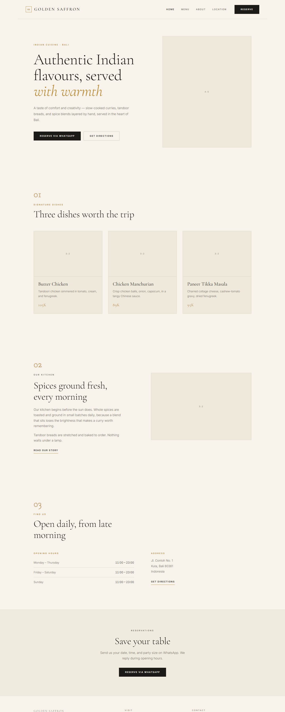
base: Darbar Bali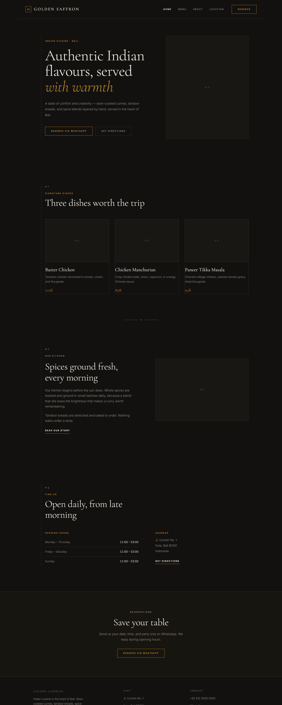
base: Ricey Silo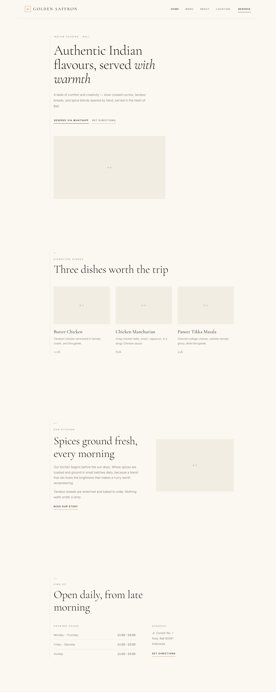
01/02/03 dicetak outline. Paling dekat dengan kondisi sekarang.4:5 / 3:2
adalah tempat foto nanti.
Uji apakah hierarki harga tetap terbaca saat emas jadi aksen
utama. Emas #C18B26 di atas #121110 = 6.3:1, lolos WCAG AA.
1440px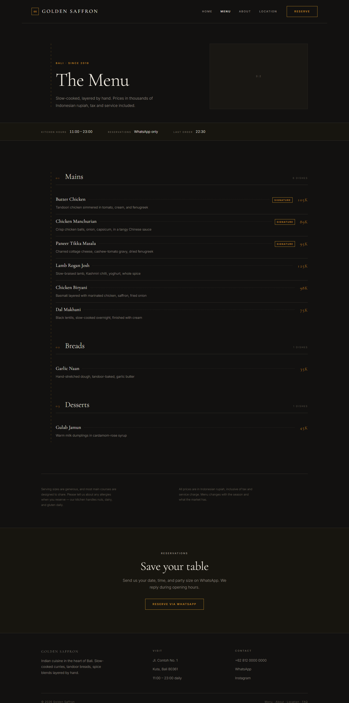
390px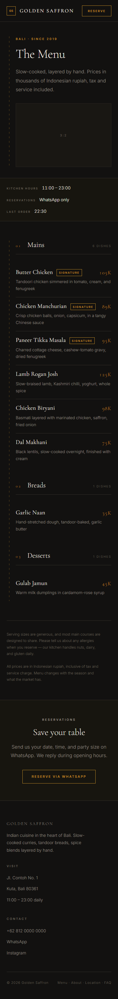
Tidak ada horizontal scroll. Hero menumpuk, slot foto jadi full width, angka section tetap terbaca.
Ivory Ledger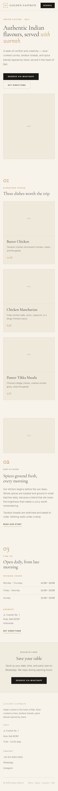
Dark Darbar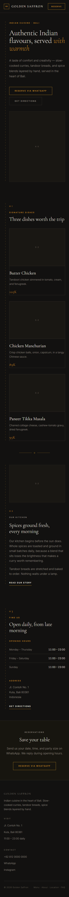
Editorial Spine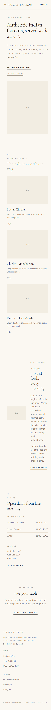
M2 kolaps jadi satu kolom. M3 mengecilkan thumbnail ke 56px.
Ledger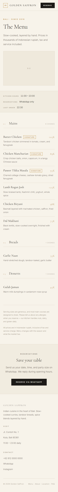
Spread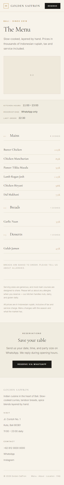
Plates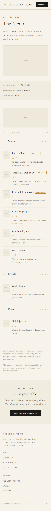
Nilai emas Darbar dan tracking dim t diambil langsung dari CSS situs aslinya, bukan perkiraan.
| Token | K1 Ivory Ledger | K2 Dark Darbar | K3 Editorial Spine |
|---|---|---|---|
| Kanvas | #F7F3EA | #121110 | #FBF8F2 |
| Permukaan | #EFE9DC | #1A1815 | — |
| Teks | #1C1A17 (16:1) | #F2EDE3 (16:1) | #1C1A17 (16:1) |
| Aksen | #B8862F hairline saja | #C18B26 harga & outline | #B8862F angka saja |
| Display | Cormorant Garamond | Cormorant Garamond | Cormorant, clamp 42–78px |
| Label | Inter caps .18em | Public Sans caps .2em | Inter caps .2em |
| CTA primary | Ink solid | Emas outline | Ink underline |
| Signature move | Panel tonal + nomor outline | Stitch emas + ornamen | Spine vertikal 1px |
| Ketahanan tanpa foto | Tinggi | Tinggi | Sedang |
| Risiko "belum jadi" | Rendah | Sedang | Tinggi |
lib/whatsapp.ts sebagai satu-satunya sumber
tautan), SEO (JSON-LD, sitemap, robots), dan aturan kontras WCAG.
Semua warna tetap di @theme di app/globals.css —
nol hex di komponen.